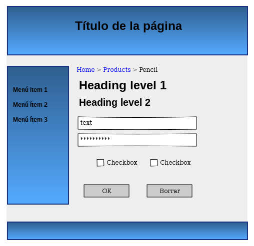

Unidad 1.2 - Diseño de prototipos
1 Introducción
En todo proyecto de desarrollo web es recomendable realizar un prototipo o boceto del interfaz. De esta manera se puede tener una idea aproximada del aspecto visual que tendrá, qué secciones lo compondrán, cómo se verán en pantalla, etc.
El principal objetivo de utilizar estas herramientas es generar un boceto de manera rápida, sin necesidad de utilizar código. El diseño puede ser exportado a un archivo de imagen o PDF para adjuntar a la documentación del proyecto.
Estos bocetos permiten acordar las características del interfaz web con el cliente o con el resto de miembros del equipo de desarrollo.

Figura 1: Ejemplo de prototipo
2 Herramientas de creado de prototipos
Existe un gran número de herramientas de creado de prototipos. Muchas de ellas son de pago, aunque hay alternativas gratuitas con una funcionalidad algo más reducida pero que puede ser suficiente para realizar un boceto rápido. Algunas de ellas se enumeran a continuación:
- Pencil - Programa de escritorio. Open Source.
- Balsamiq - Herramienta online. Comercial. Ofrece demo gratuita.
- wireframe.cc - Herramienta online. Comercial. Ofrece demo gratuita.